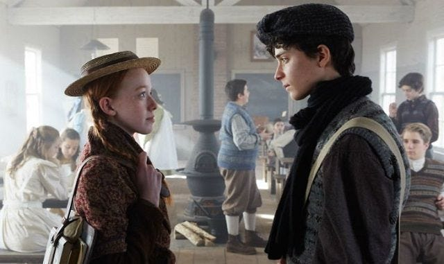
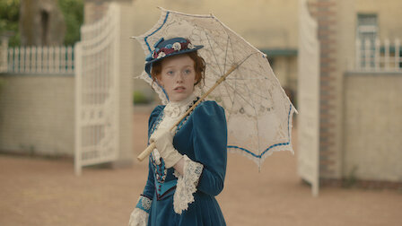
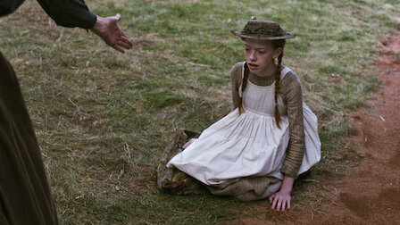
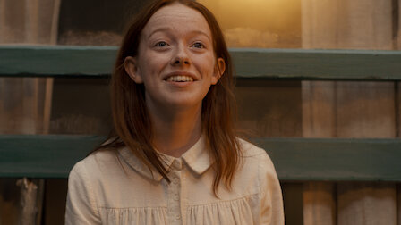
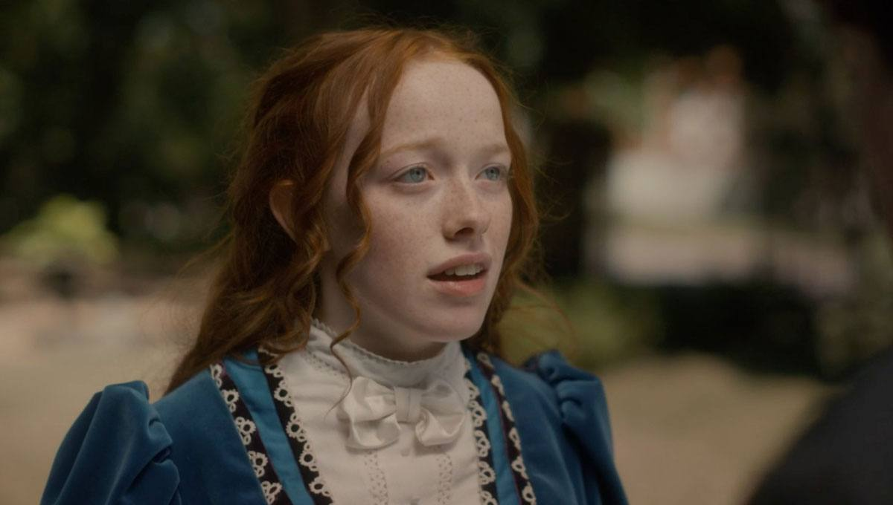
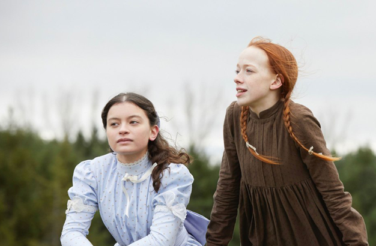
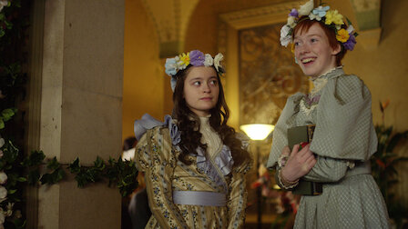
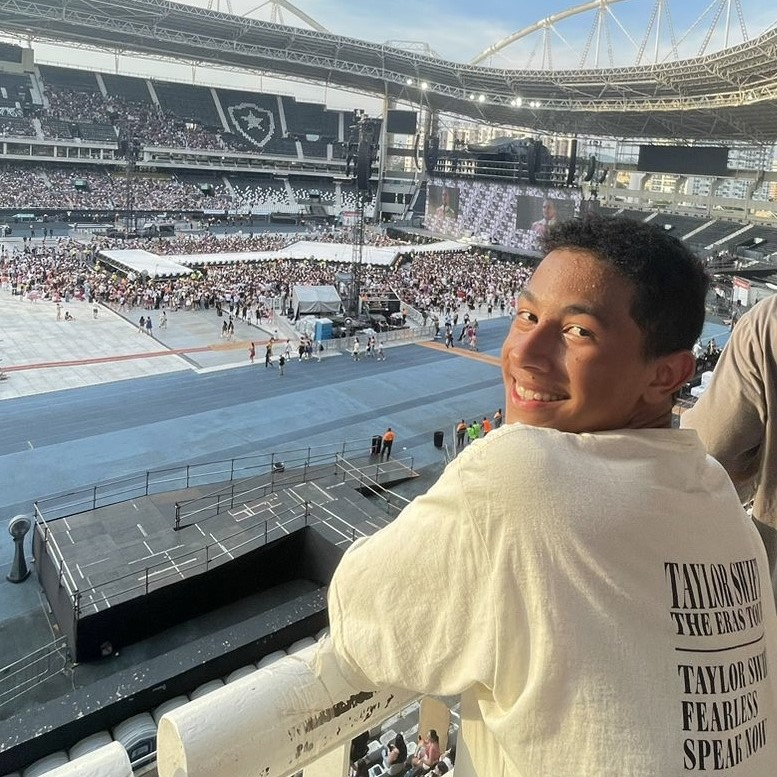

{kind=link}
{kind=link}
{kind=link}
{kind=link}
{kind=link}
{kind=link}
{kind=link}
{kind=link}
{kind=link}
{kind=link}
{kind=link}
{kind=link}
Netflix
Sobre
Anne of Green Gables (no Brasil: Anne de Green Gables) é um romance da escritora canadense L. M. Montgomery, publicado em 1908. Foi escrito como ficção para leitores de todas as idades, mas nas últimas décadas tem sido considerado principalmente como literatura infantojuvenil.
Livro VS. Série
A maior diferença na aparência de Anne do livro e da série está nos olhos. Na obra literária, a personagem tem olhos verdes, enquanto Amybeth McNulty, atriz que interpreta Anne na série, tem olhos azuis. Ao longo da história, a personagem Diana é descrita como um ícone da beleza, com cabelos e olhos pretos. Já na série, a personagem tem cabelos castanhos e vive se queixando por não ter a magreza de Anne.
Na primeira temporada da série, quando é apresentado o passado de Anne, existe um tom sombrio e triste na história. Em comparação com os livros, a ideia de sofrimento nas vivências da protagonista foi bem mais evidenciada na TV.
- Data de publicação: 13 de Junho de 1908.
- Tamanho: 336 páginas.
- Editora (no Brasil): Ciranda Cultural.
- Autora: L.M. Montgomery.
Ambientado no fim do século XIX, o livro conta as aventuras de Anne Shirley, uma órfã de onze anos que, por engano, acaba por morar com dois irmãos de meia idade, Matthew e Marilla Cuthbert. Os dois vivem em uma fazenda na cidade fictícia de Avonlea, na Ilha do Príncipe Eduardo. Inicialmente, eles pretendiam adotar um pequeno garoto, para que este os auxiliasse com os trabalhos braçais.

Exemplares vendidos em sete meses.
Países já assistiram a série.
Minutos de série.
Conheça as personagens
Entrevista entre Amybeth McNulty intérprete de 'Anne' e Lucas Jade Zumann, 'Gilbert'.
AssistirLivros
Esta série é composta por 8 romances principais e 5 livros de contos e crônicas. Mas apenas os 6 primeiros livros possuem Anne como protagonista, enquanto nos demais ela é apenas uma personagem secundária.
1. Anne de Green Gables
Anne é uma órfã que foi enviada por engano à fazenda de Green Gables, já que os irmãos Marilla e Matthew tinham a intenção de adotar um menino. Com pena da garota, resolveram mantê-la na fazenda. Com seus longos cabelos ruivos, olhos acinzentados e uma imaginação que lhe permitia viver fantasias, Anne traz reflexões e pensamentos pertinentes sobre os obstáculos e as escolhas da vida de qualquer pré-adolescente.
Saiba mais2. Anne de Avonlea
Agora com 16 anos, sentindo-se quase adulta, Anne está prestes a começar a lecionar na escola de Avonlea, a realidade de seu trabalho torna-se um teste para seu caráter, surgindo várias dúvidas quanto ao seu futuro. Ela conquistou o amor do povoado e se tornou uma ativa participante de uma associação para melhorias em Avonlea. Enfim, Anne decide deixar tudo para ir atrás de seu grande sonho.
Saiba mais3. Anne da ilha
Decidida a realizar o seu sonho, Anne se muda para Kingsport e vai morar com sua amiga Priscilla Grant para finalmente terminar os seus estudos em Redmond College. Gilbert Blythe, desejando estudar medicina, também parte para Kingsport e enxerga a oportunidade de revelar seus sentimentos a Anne. O novo ambiente e a vida adulta trazem novos desafios e perdas que mudam as perspectivas e amadurecem a forma como ela enxerga o mundo.
Saiba mais4. Anne de Windy Poplars
Anne agora é diretora da escola de Summerside. A nova cidade e posição preparam desafios, como a influente família Pringle, que não a quer a frente da escola. Gilbert Blythe está a três anos de concluir a faculdade de medicina e Anne se corresponde com o noivo por cartas, compartilhando sua rotina com as viúvas tia Kate e tia Chatty, a governanta Rebecca Dew, o gato Dusty e sua vizinha Elizabeth.
Saiba mais5. A casa dos sonhos de Anne
Sob o sol de Green Gables, onde tudo começou, Anne e Gilbert selam o relacionamento e assumem um futuro juntos. Em Four Winds uma oportunidade profissional aguarda Gilbert e rodeada de árvores e um riacho está a casa dos sonhos de Anne. Lá, conhecerão o capitão Jim e a Leslie Moore, vizinhos com histórias surpreendentes para compartilharem com o casal, que passará por momentos difíceis e alegres em seu primeiro ano de casado.
Saiba mais6. Anne de Ingleside
Em Ingleside, a vida é bem agitada, cheia de descobertas dos cinco filhos de Anne. Com um sexto a caminho, ela não poderia estar mais assoberbada, até que a inconveniente tia Mary Maria faz uma inoportuna visita. Gilbert está sempre ocupado com o trabalho e Anne atarefada com os filhos, o que a leva a pensar que o amor do marido esfriou. Mas Anne está disposta a reacender o amor que existe entre eles desde a infância.
Saiba maisAvaliações
Confira avaliações de usuários.

Dennys R.
Eu nunca assisto a séries que foram canceladas, porque é simplesmente muito frustrante saber que a história não terá um final digno, mas com Anne eu abri uma exceção e não me arrependo.
Bruno Willian
Sensacional espetacular,top ,sem palavras nota 1000 Assisti por causa dos comentários do adoro cinema e adorei. Admito que gosto mais de suspense e ação. Mas Anne me surpreendeu top, muito boa série.
Thay Sfc
Umas das séries mais lindas e memorável que eu já assisti na vida. Contemporânea porém atual, abordando vários assuntos atuais importantes. Uma fotografia impecável e com atores de ótimo potencial. Uma pena a série ser cancelada.
Nathalia E.
Assisti os 7 episódios em um dia. Aliás, os devorei. Estou completamente apaixonada. Fazia tempo que não se lançava uma série tão doce e pura como essa. O ambiente, as atuações, os diálogos, os personagens, a fotografia...
André S.
Muito boa a série, não curto muito o estilo coitadinha, portanto comecei com o sarrafo da expectativa lá embaixo e me surpreendi. Se até um troglodita como eu consegue se divertir com Anne, você também irá. Depois desta série, se não for par ter um filha eu nem quero ser pai!
Série
Anne with an E é uma série canadense e a história acompanha a vida de Anne Shirley.
Saiba mais sobre a série
No elenco estão, Amybeth McNulty, Lucas Jade Zumann, Geraldine James, R. H. Thomson e Dalila Bela.
Ano de lançamento: 2017.
A chegada de uma jovem órfã afeta todos na pequena cidade de Avonlea, começando pelos irmãos Matthew e Marilla, que decidem adotar um filho já em idade avançada.
Ano de lançamento: 2018.
O mundo de Green Gables que Anne tanto adora se expande com novas pessoas e emocionantes histórias de amor, perdas e amadurecimento.
Ano de lançamento: 2019.
Anne faz 16 anos e decide tentar descobrir mais sobre suas origens enquanto lida com questões do coração e se prepara para o futuro. Infelizmente a série foi cancelada na sua terceira temporada.
- Tudo
- Anne
- Temp. 1
- Temp. 2
- Temp. 3

Anne e Gilbert
Imagem da primeira temporada.

Anne na terceira temporada
Clique na imagem para ampliar.

Anne de Green Gables
Imagem da primeira temporada.

Terceira temporada é a última
Clique na imagem para ampliar.

Amybeth McNulty
Atriz vive a protagonista 'Anne'

Diana Barry
Melhor amiga de 'Anne' é interpretada por Dalila Bela.

Anne na segunda temporada
Clique na imagem para ampliar.
Integrantes
Conheça os integrantes do nosso grupo!
Letícia Nascimento
Luana Garcia

Murilo Bezerra
Raphaela Luvizotto
Ryllary Victória
Professoras
Professoras orientadoras do trabalho.

Amanda Chagas

Cíntia Pinho
Veja!
Conteúdos para se aprofundar ainda mais na história encantadora da jovem Anne, uma mulher além de seu tempo.
Medium.com
Conheça melhor o elenco de Anne with an E
Contato
Localização:
Rua Bélgica, Ribeirão Pires
Email:
info@example.com
Telefone:
+55 11 95895 5488
Funcionamento:
Seg-Sex: 11h10 - 12h50